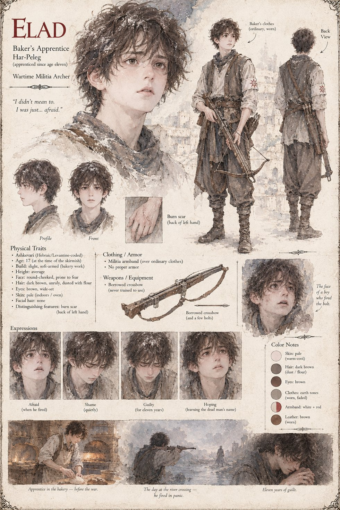

Elad
Baker's Apprentice, Har-Peleg · Wartime Militia Archer
Apprenticed to a Har-Peleg bakery since the age of eleven, handed a militia armband and a borrowed crossbow he was never trained to use once the war reaches the river crossing. At seventeen, in the chaos of a skirmish, he fires once, in panic, and kills a Vantashen soldier he never sees clearly. He carries the guilt for eleven years before he finally learns the dead man's name: Hovan.
“I didn't mean to. I was just... afraid.”